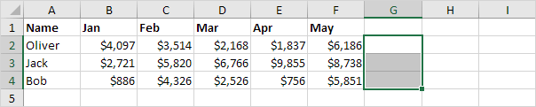
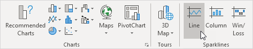
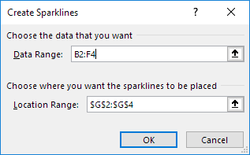
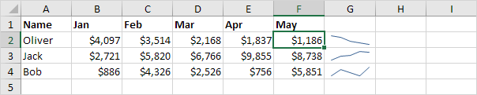
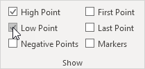
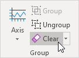

Sparklines
Create Sparklines | Customize Sparklines | Sparkline Types | Sparkline Axes | Hidden and Empty Cells
Sparklines in Excel are graphs that fit in one cell. Sparklines are great for displaying trends. Excel offers three sparkline types: Line, Column and Win/Loss.
Create Sparklines
To create sparklines, execute the following steps.
1. Select the cells where you want the sparklines to appear. In this example, we select the range G2:G4.

2. On the Insert tab, in the Sparklines group, click Line.

3. Click in the Data Range box and select the range B2:F4.

4. Click OK.
Result:
5. Change the value in cell F2 to 1186.
Result. Excel automatically updates the sparkline.

Customize Sparklines
To customize sparklines, execute the following steps.
1. Select the sparklines.
2. On the Sparkline tab, in the Show group, check High Point and Low Point.

Result:
Note: to make the sparklines larger, simply change the row height and column width of the sparkline cells.
3. On the Sparkline tab, in the Style group, choose a nice visual style.
Result:

Note: the high points are colored green now and the low points are colored red.
To delete a sparkline, execute the following steps.
4. Select 1 or more sparklines.
5. On the Sparkline tab, in the Group group, click Clear.

Note: when creating multiple sparklines at once (one for each row or column of data), your sparklines are grouped. To customize each sparkline individually, first select the grouped sparklines and click Ungroup.
Sparkline Types
Excel offers three sparkline types: Line, Column and Win/Loss. You can easily change to a different type of sparkline at any time.
1. Below you can find the Line sparklines we created in the previous two paragraphs.
2. Select the Line sparklines.
3. On the Sparkline tab, in the Type group, click Column.
Result:

4. Select the column sparklines.
5. On the Sparkline tab, in the Type group, click Win/Loss.
6. On the Sparkline tab, in the Show group, uncheck High Point and Low Point and check Negative Points.
Result:
Note: we changed the data to negative and positive values. A win/loss sparkline only shows whether each value is positive (win) or negative (loss).
Sparkline Axes
By default, each sparkline has its own vertical scale. The maximum value is plotted at the top of the cell. The minimum value is plotted at the bottom of the cell.
1. Below you can find the column sparklines we created in the previous paragraph.
Note: all green bars have the same height, but the maximum values (B2, E3 and F4) are different!
2. Select the column sparklines.
3. On the Sparkline tab, in the Group group, click Axis.
4. Under Vertical Axis Minimum Value Options and Vertical Axis Maximum Value Options, select Same for All Sparklines.
Result:
Conclusion: now you can clearly see that the earnings of Jack are much higher.
5. Here's another cool little trick. Below you can find three sparklines with negative values.
6. Select the sparklines.
7. On the Sparkline tab, in the Group group, click Axis.
8. Under Horizontal Axis Options, click Show Axis.
9. On the Sparkline tab, in the Show group, check Negative Points.
Result:
Note: the horizontal axis only appears if the sparkline has data that crosses the zero axis. On the Sparkline tab, in the Style group, click Marker Color to change the color of the negative points.
Hidden and Empty Cells
By default, Excel does not show hidden data in a sparkline and empty cells are shown as gaps.
1. Select 1 or more sparklines.
2. On the Sparkline tab, in the Sparkline group, click Edit Data.
3. Click Hidden & Empty cells.
The following dialog box appears.
Note: to show hidden data in a sparkline, check "Show data in hidden rows and columns".
4. You can show empty cells as gaps (first sparkline below), zero (second sparkline below) or connect the data points with a line (third sparkline below).
Note: now it's your turn! Download the Excel file and try to create a few sparklines. Practice makes perfect.